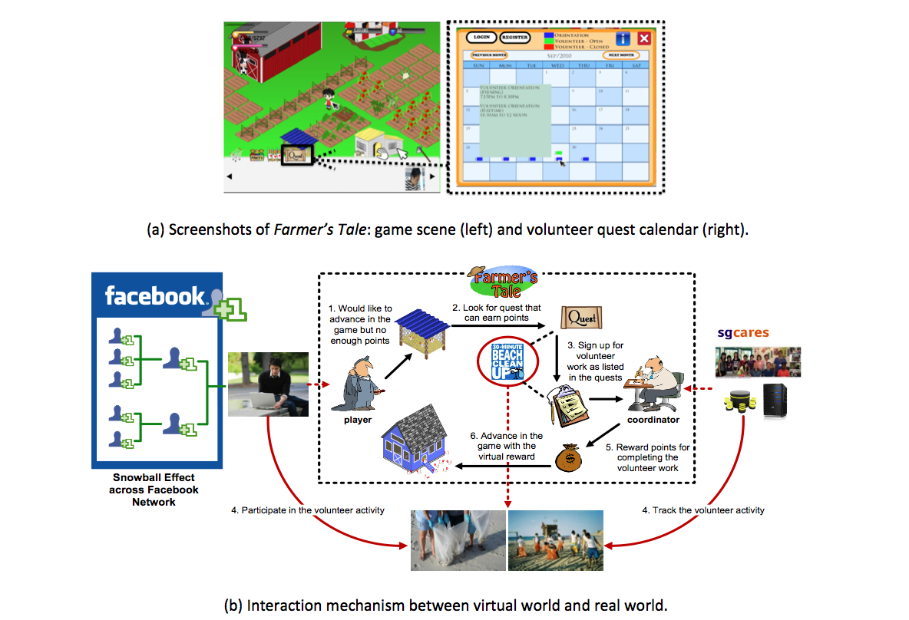

Abstract
Volunteering is an important activity that brings great benefits to societies. However, encouraging volunteerism is difficult due to the altruistic nature of volunteer activities and the high resource demand in carrying them out. We have created a Facebook game called “Farmer’s Tale” to attract and make it easier for people to volunteer. We evaluated people’s acceptance to this novel idea and the results revealed great potential in such type of games.
Materials
PDF |
Slides |
BibTeX